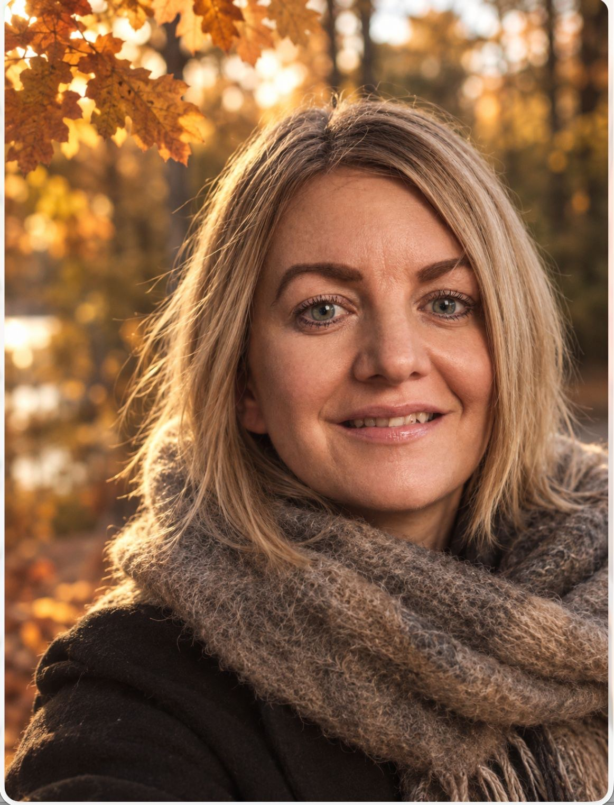

Människor utvecklas
i relation.
Samtal för par, för dig själv och för arbetsgrupper. När det skaver går det nästan alltid att säga — det svåra är att veta hur man börjar.
- Parsamtal
- För er som lever ihop
- Individuell utveckling
- För dig själv
- Grupper & arbetsplatser
- För er som arbetar ihop
Tre sätt att arbeta med relationer.
Samma utgångspunkt varje gång: tydlighet är omtanke. Det som sägs rakt blir nästan alltid mindre farligt än det som ligger och skaver.

Parsamtal
När samma samtal återkommer utan att leda någonstans, eller när ni slutat ha dem alls.
För er som lever ihop
Individuell utveckling
För dig som står i en omställning och vill tänka högt med någon som inte har en agenda.
För dig själv
Grupper & arbetsplatser
När en grupp fastnat, en konflikt blivit infekterad eller ett ledningsteam behöver prata på riktigt.
För er som arbetar ihopDet här brukar få folk att höra av sig.
Du behöver inte känna igen dig i allt. Ett enda av de här räcker som skäl att ta ett första samtal.
- Samma bråk om och om igenNi vet båda hur det slutar redan när det börjar, men ingen kommer ur det.
- Ni har slutat prataDet är lugnt på ytan, men ni pratar bara om praktiska saker och barnen.
- Du står inför ett vägvalI jobbet eller i livet, och kommer inte vidare på egen hand.
- Samma mönster upprepasDu känner igen dig i varje relation du hamnar i.
- Två medarbetare pratar inte längreOch hela gruppen anpassar sig runt det.
- Ledningsgruppen undviker det svåraMötena går fort men ingenting blir avgjort.
Det är sällan sakfrågan.
Det är hur ni pratar om den.
Par som sitter fast har oftast inte ett informationsproblem. Båda vet vad den andra tycker. Det som fattas är ett sätt att säga det utan att det blir ett bråk — och ett sätt att lyssna utan att genast försvara sig.
Samma sak gäller en arbetsgrupp. Konflikten handlar sällan om processen eller resursfördelningen i sig, utan om förväntningar som aldrig blivit uttalade och om vem som egentligen får säga vad.
Mitt jobb är att hålla det rummet. Inte att avgöra vem som har rätt.
Den som sitter i rummet.
Jag arbetar med relationer — mellan två personer, inom en person och i grupper som ska fungera ihop. Att komma till ett första samtal är för många det svåraste steget. Därför är det samtalet till för att du ska få veta om det här känns rätt, ingenting annat.

Fyra steg, och du bestämmer takten.
Ingenting är bestämt efter det första samtalet. Det är till för att du ska få veta om det här känns rätt.
Du hör av dig
Skriv några rader om vad det gäller. Du behöver inte formulera det färdigt — det är själva poängen med att komma.
Ett första samtal
Vi ses, digitalt eller på plats, och går igenom läget. Efter det vet du om det här känns rätt. Inget är bestämt innan dess.
Vi lägger upp arbetet
Hur ofta och hur länge beror på vad ni vill åt. Vissa behöver tre gånger, andra arbetar över en längre tid.
Ni tar över
Målet är inte att ni ska gå i samtal för alltid, utan att ni ska klara samtalen själva.

Det går att hitta tillbaka till varandra. Oftast börjar det med ett enda samtal.
Foto: Harli Marten, UnsplashSå fungerar det rent konkret.
- Form
- Digitalt eller på plats Många väljer digitalt för att få ihop det med vardagen. Arbetsgrupper arbetar vi oftast med på plats hos er.
- Tillsammans eller själv
- Båda går bra Du kan börja enskilt och ta in den andra senare. Ni behöver inte vara överens om att gå för att komma.
- Första samtalet
- Utan bindning Det är till för att du ska få veta om det här känns rätt. Inget är bestämt innan dess.
Det folk brukar undra.
Hittar du inte svaret här går det alltid bra att fråga direkt.
Vad kostar ett samtal?
Priset beror på om det gäller ett enskilt samtal, parsamtal eller ett uppdrag med en arbetsgrupp. Hör av dig så får du ett tydligt besked innan vi bokar något.
Hur lång tid tar det?
Vissa behöver tre eller fyra gånger för att komma ur något som fastnat. Andra arbetar över en längre period. Vi bestämmer det tillsammans efter det första samtalet, och du kan avbryta när du vill.
Måste vi komma båda två?
Nej. Det går utmärkt att börja enskilt och ta in den andra senare, eller att hålla det individuellt hela vägen. Ofta räcker det att en person börjar röra sig för att något ska lossna.
Går det att ha samtalen digitalt?
Ja. Många väljer digitalt eftersom det är enklare att få ihop med vardagen. Arbetsplatsuppdrag sker oftast på plats hos er, eftersom en grupp fungerar bättre i samma rum.
Är det samma sak som parterapi?
Jag arbetar med samtal, relationer och utveckling — inte med behandling av psykisk ohälsa. Om det du bär på hör hemma i vården säger jag det, och hjälper dig hellre vidare än håller kvar dig.
Stannar det som sägs i rummet?
Ja. Vid uppdrag med arbetsgrupper kommer vi överens om exakt vad som återrapporteras till uppdragsgivaren innan vi börjar, så att alla i rummet vet vad som gäller.
Det första samtalet kostar ingenting att fråga om.
Skriv några rader om vad det gäller. Du behöver inte ha formulerat det färdigt.